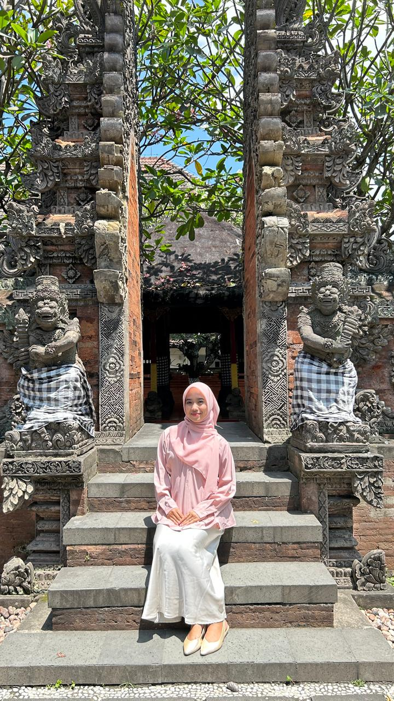
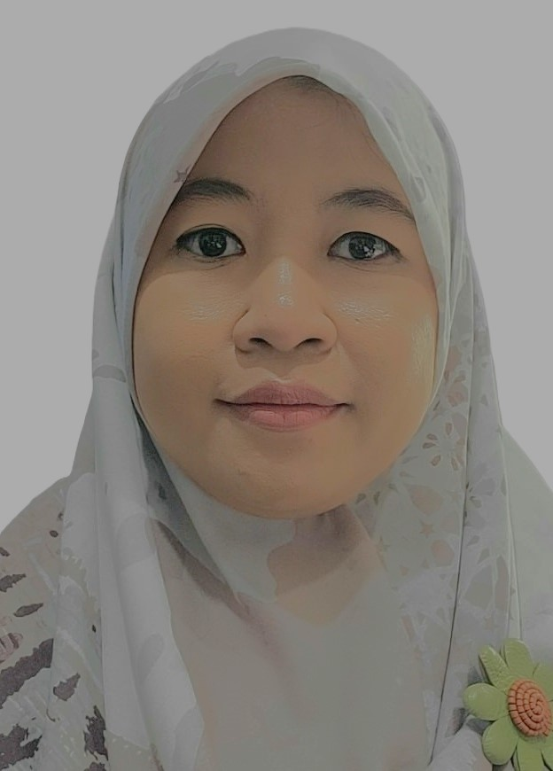

Haii, teman-teman! 👋 Perkenalkan, saya adalah pengembang media pembelajaran 3D Bangun Ruang Interaktif ini.
Website ini dibuat dengan satu tujuan sederhana: supaya belajar bangun ruang jadi lebih seru, mudah, dan tidak membosankan! 🎉 Dengan model 3D yang bisa diputar dan fitur AR, semoga materi Matematika terasa lebih nyata dan gampang dipahami.
Semangat belajarnya ya! Kalau ada yang bingung, jangan takut untuk mencoba fitur kuis berulang kali sampai paham. Kamu pasti bisa! 💪✨